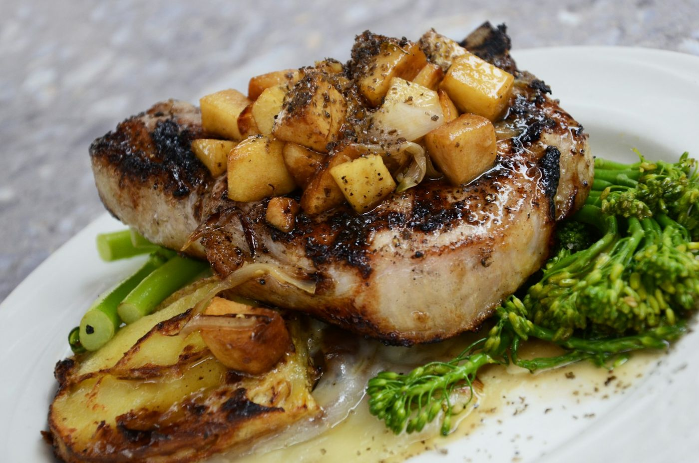
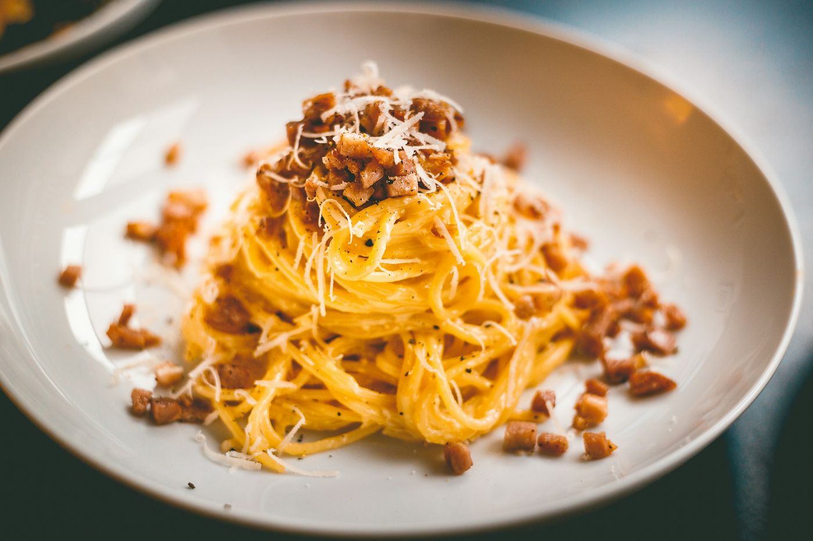
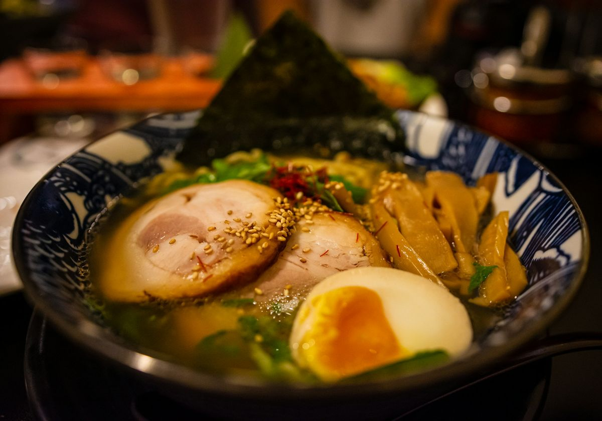

Sites que dão fome antes do primeiro prato.
Três projetos conceito, um para cada estilo de casa: do bistrô de mercado ao ramen-ya. Layout cuidado, fotos de comida de verdade e leitura perfeita no celular.

Projeto conceitoCozinha de mercado
Casa Verbena
Claro, caloroso e cheio de vida: destaque para o prato, seção de populares, faixa de oferta e reservas.
- Playfair + script
- Laranja & verde
- Reservas

Projeto conceitoCasa de massas
Aurelia
Elegância clássica em creme e dourado: categorias circulares, recomendações do chef com abas e faixa escura.
- Cinzel + Cormorant
- Creme & dourado
- Cardápio com abas

Projeto conceitoRamen-ya & izakaya
Akai Ramen-ya
Vermelho intenso, ondas e detalhes japoneses sutis, com tigelas em destaque e cardápio em colunas.
- Shippori Mincho
- Vermelho & creme
- Ondas